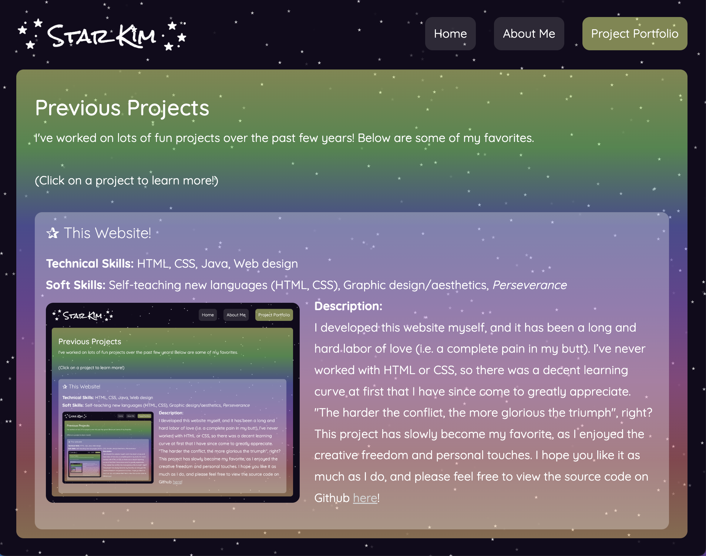
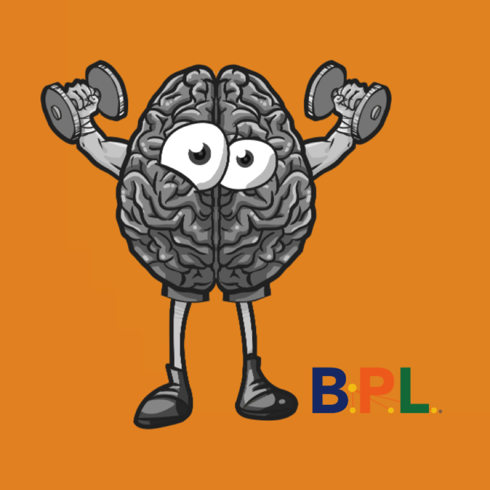

I've worked on lots of fun projects over the past few years! Below are some of my favorites.
(Click on a project to learn more!)
Technical Skills: HTML, CSS, Java, Web design
Soft Skills: Self-teaching new languages (HTML, CSS), Graphic design/aesthetics, Perseverance

Description:
I developed this website myself, and it has been a long and hard labor of love (i.e. a complete pain in my butt). I’ve never worked with HTML or CSS, so there was a decent learning curve at first that I have since come to greatly appreciate. "The harder the conflict, the more glorious the triumph", right? This project has slowly become my favorite, as I enjoyed the creative freedom and personal touches. I hope you like it as much as I do, and please feel free to view the source code on Github here!
SK Planner was a solo project I developed for MacOS in Xcode during a graduate seminar class. As my final project, I created a comprehensive planner app with a calendar and task lists. In the design I prioritized data consistency across various panels, user intuitiveness, and customizability to suit diverse needs. A demo video showcasing basic app functionality is available to the left, and the code is available on Github here!
Technical Skills: GameMaker, Game mechanics, Graphics, Pair programming, Github, Agile development
Soletta was a graduate seminar project where I partnered with a classmate over the course of the semester to create an original desktop video game using GameMaker Studio. Soletta is a fun and lighthearted space-themed adventure game that offered a diverse range of gameplay modes, including enemy combat, puzzle-solving, and spaceship navigation. A demo video showcasing the game can be found to the left, and the code is available on Github here!
Soft Skills: Client communication, Teamwork, Working with a non-technical client, Graphic design

Description:
Spanish is Fun was a 6-week summer project focused on creating a mobile application for a local Spanish school. Developed for both iOS and Android platforms, our team of three undergraduate students aimed to enhance the language learning experience through engaging exercises and interactive features. The app offered a variety of functionality, including flashcards, multiple-choice quizzes, and audio-visual aids for pronunciation practice. Our work prioritized aesthetics and user experience, investing significant effort into design elements such as splash screens, logos, and visual content. The emphasis on quality permeated every aspect of the project, resulting in a polished and user-friendly application! The code remains under contract, so unfortunately there is no access. If you're curious, you can visit the school's website here!
Technical Skills: Java, Agile development, Computer-generated player moves/choices, Data Structures, Data management
Soft Skills: Game design, Communication, Teamwork, Management/organization of a large code base
Description:
Clue was an undergraduate project developed over using Java and the Agile development process. I collaborated with a partner to create a desktop version of the classic board game, Clue. Designed as a single-player game, we faced the additional challenge of integrating computer-generated player moves through complex algorithms, adding depth and realism to the gameplay. A demo video showcasing the gameplay can be found to the left. Unfortunately, I am unable to publicly share the code, as the school still uses this project for students. If you’d like to view it, I am happy to add you as a collaborator!
Technical Skills: User-driven development, Human-computer Interaction, User testing, Prototype development
Soft Skills: Stakeholder interviewing, Technical writing, Teamwork, Research conduction, Design implication generation, Communication
Technical Skills: IoT devices, Security and Privacy implications, Siri functionality
Soft Skills: Research conduction, Technical writing, Comprehension and compilation of relevant previous research
I have completed additional hands-on coursework in...